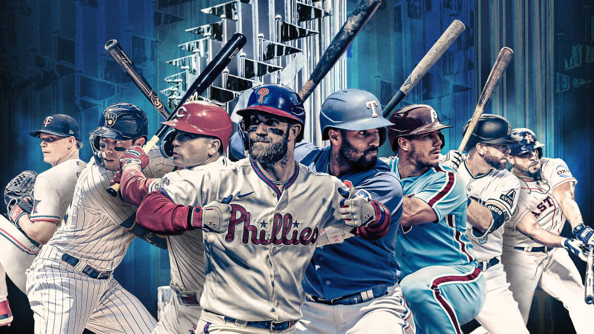
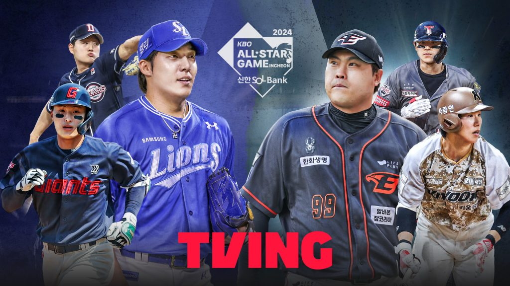
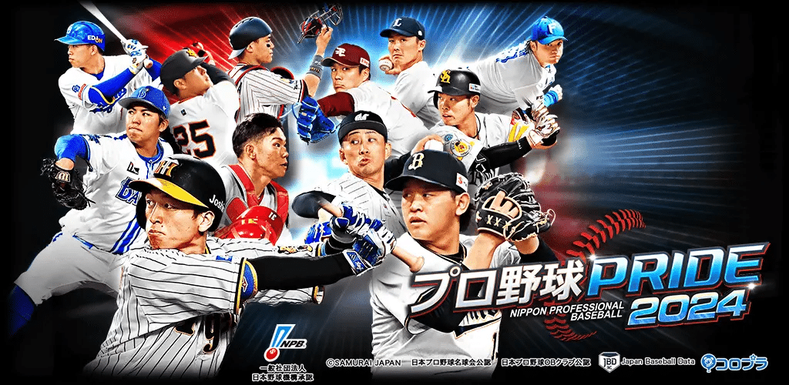
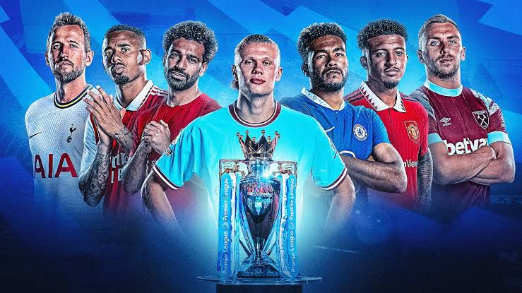
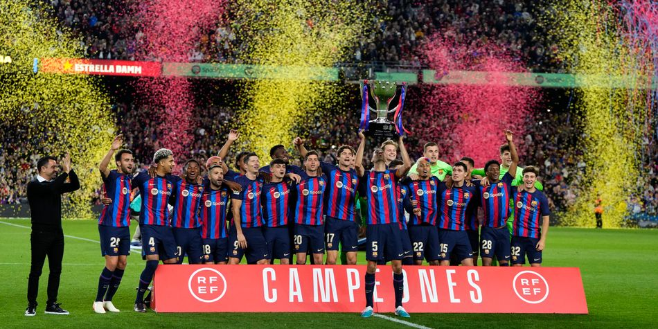
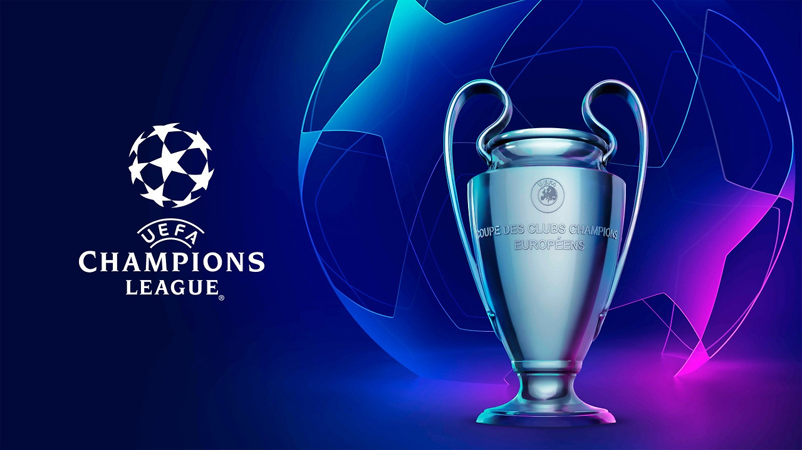

스포츠중계 - 무료로 실시간 스포츠를 시청하세요
스포츠 팬을 위한 최고의 플랫폼에서 MLB, KBO, EPL, 라리가 등 다양한 스포츠 경기를 무료로 실시간으로 즐기세요. 실시간 이벤트와 다양한 혜택도 함께 제공됩니다.
스포츠중계란 무엇인가?
스포츠중계는 다양한 스포츠 이벤트를 실시간으로 시청자에게 전달하는 복합적 미디어 과정으로, 전통적인 방송 매체와 최신 디지털 스트리밍 기술을 결합하여 구현됩니다. 과거 라디오와 텔레비전이 주요 플랫폼으로 활용되던 스포츠중계는, 현재 인터넷과 모바일 스트리밍 서비스의 발전으로 인해 그 범위와 접근성이 획기적으로 확대되었습니다.
스포츠중계는 단순히 경기 상황을 전달하는 것을 넘어서, 실시간으로 경기 하이라이트를 재구성하거나, 통계 및 데이터 분석 기반의 정보 제공, 전문가 패널의 경기 해설을 포함한 다차원적인 콘텐츠로 발전했습니다. 특히 스트리밍 플랫폼의 발달로 인해 전 세계 팬들이 지역적, 시간적 제약 없이 실시간 스포츠 콘텐츠에 접근할 수 있는 환경이 조성되었으며, 이러한 변화는 스포츠중계의 역사와 본질을 재정의하고 있습니다.
오늘날의 스포츠중계는 전통적인 방송 시스템뿐만 아니라, 클라우드 기반의 스트리밍 기술, 가상 현실(VR) 및 증강 현실(AR) 등 최첨단 기술의 도입으로 시청자에게 더욱 몰입감 있는 경험을 제공합니다. 또한, 팬들과의 상호작용을 중시하는 플랫폼들은 실시간 댓글, 투표, 커뮤니티 기능을 통해 기존의 단방향적 중계 방식에서 벗어나 보다 적극적인 참여형 스포츠중계로 진화하고 있습니다.
스포츠중계의 발전
스포츠중계는 기술 혁신과 함께 급격히 변화해온 분야 중 하나입니다. 초기의 스포츠중계는 라디오와 TV를 통해 제한된 지역에서만 제공되었으나, 방송 기술이 발전하면서 실시간으로 경기를 시청하는 것이 보편화되었습니다. 특히 1950년대 TV 중계의 도입은 스포츠 팬들에게 집에서 경기의 현장감을 느낄 수 있는 새로운 경험을 제공하였고, 이후 위성 방송과 케이블 TV의 보급으로 전 세계 어디에서나 주요 스포츠 이벤트를 실시간으로 시청할 수 있게 되었습니다.
1990년대 말부터는 인터넷의 등장과 함께 스포츠중계의 패러다임이 다시 한 번 변화했습니다. 웹 기반 스트리밍 기술은 지리적 제약을 없애고, 사용자가 원하는 시간에 경기를 볼 수 있는 VOD(Video on Demand) 서비스와 실시간 스트리밍을 가능하게 했습니다. 그 결과, 팬들은 언제 어디서나 전 세계의 스포츠 이벤트를 실시간으로 시청할 수 있게 되었습니다.
최근 몇 년간의 가장 큰 발전 중 하나는 모바일 중계의 등장입니다. 스마트폰과 태블릿 같은 모바일 기기의 보급으로 팬들은 더 이상 집에서 TV로만 경기를 시청할 필요가 없어졌습니다. 5G 네트워크의 상용화와 고화질 스트리밍 기술의 발전 덕분에 팬들은 이동 중에도 고해상도의 경기 영상을 끊김 없이 감상할 수 있습니다. 또한, 모바일 앱과 함께 제공되는 실시간 알림, 경기 하이라이트, 팬 커뮤니티 기능은 팬들의 참여도를 높이고 스포츠 중계 경험을 더욱 풍부하게 만듭니다.
스포츠중계는 이제 단순한 경기 시청을 넘어서, 인공지능(AI)과 빅데이터 분석 기술을 통해 경기 중 실시간으로 데이터를 제공하고, 가상 현실(VR)과 증강 현실(AR)을 활용한 몰입형 경험을 제공하는 방향으로 나아가고 있습니다. 이와 같은 기술적 진보는 스포츠 팬들이 단순한 시청자에서 적극적인 참여자로 전환하는 기회를 제공하며, 스포츠중계의 미래를 더욱 다채롭게 만들어가고 있습니다.
스포츠중계의 종류
스포츠중계는 기술과 시청자의 요구에 따라 다양한 형태로 진화하고 있습니다. 각 중계 방식은 스포츠 팬들에게 맞춤형 경험을 제공하며, 각자의 필요에 따라 다른 방식의 중계를 선택할 수 있습니다. 여기에서는 대표적인 스포츠중계의 종류를 자세히 설명하겠습니다.
- 생중계(Live 중계): 실시간으로 경기를 중계하는 방식으로, 스포츠중계의 가장 기본적인 형태입니다. 생중계는 팬들이 경기장에서 느낄 수 있는 현장감과 긴장감을 그대로 전달하며, 시청자들은 시간 차이 없이 경기의 진행 상황을 따라갈 수 있습니다. 이는 고화질 스트리밍 기술과 결합하여 전 세계 어디서나 안정적으로 실시간 스포츠중계를 제공하는 기반이 되고 있습니다. 주요 생중계 플랫폼으로는 DAZN, ESPN, 네이버 스포츠 등이 있습니다.
- 녹화중계: 경기가 끝난 후 해당 경기를 녹화하여 다시 시청할 수 있는 방식입니다. 생중계를 놓친 시청자나 특정 장면을 다시 보고 싶은 팬들에게 유용합니다. 주요 스포츠 리그는 자사 스트리밍 플랫폼이나 VOD(Video on Demand) 서비스를 통해 녹화중계를 제공합니다. 이 방식은 다양한 시간대에 맞춰 시청이 가능하다는 장점이 있습니다.
- 하이라이트 중계: 경기에 집중할 시간이 부족한 시청자들을 위해, 중요한 장면만을 편집해 제공하는 방식입니다. 주로 득점 장면, 결정적인 순간, 주요 플레이 등을 포함하며, 빠른 시간 안에 경기의 핵심을 파악할 수 있습니다. 하이라이트 중계는 TV와 인터넷 플랫폼에서 모두 제공되며, 유튜브, 스포츠 전용 앱 등에서 쉽게 접근할 수 있습니다. 이 방식은 경기 전반을 시청할 수 없는 팬들에게 인기가 높습니다.
- 멀티 앵글 중계: 하나의 경기 장면을 다양한 각도에서 촬영한 영상을 제공하는 방식입니다. 이를 통해 시청자는 자신이 원하는 시점이나 각도에서 경기를 시청할 수 있으며, 특정 플레이나 상황을 더 깊이 있게 분석할 수 있습니다. 멀티 앵글 중계는 특히 기술 발전과 함께 다양한 스트리밍 플랫폼에서 제공되며, 모바일 기기와 결합해 팬들이 자유롭게 시청 경험을 커스터마이징할 수 있는 기회를 제공합니다. 예를 들어, 축구 경기에서 골을 여러 각도에서 반복 재생하거나, 야구 경기의 투수 및 타자 시점에서 플레이를 분석할 수 있습니다.
이처럼 스포츠중계는 팬들의 다양한 요구를 충족시키기 위해 끊임없이 발전하고 있습니다. 생중계의 현장감, 녹화중계의 편리함, 하이라이트의 빠른 접근성, 멀티 앵글 중계의 깊이 있는 분석 등 다양한 중계 방식이 팬들의 시청 경험을 더욱 풍부하게 하고 있습니다. 각각의 중계 방식은 시청자가 경기를 더욱 입체적으로 즐길 수 있도록 도와주며, 스포츠중계의 미래는 이러한 다양한 시청 방식의 융합을 통해 더욱 혁신적으로 변화할 것입니다.
스포츠 리그별 중계 분석
MLB 중계
MLB는 미국 내뿐만 아니라 전 세계적으로 큰 인기를 끌고 있는 리그로, 다양한 중계 플랫폼을 통해 실시간 경기를 시청할 수 있습니다. 미국 내 시청자들은 주로 케이블 방송과 스트리밍 서비스를 통해 경기를 시청하며, 해외 팬들은 MLB.tv와 같은 글로벌 스트리밍 플랫폼을 통해 다양한 경기를 즐기고 있습니다.
2024년 현재 MLB에서 가장 큰 주목을 받고 있는 선수 중 하나는 오타니 쇼헤이입니다. 오타니는 역사적인 기록을 세우며 50홈런과 50도루를 동시에 달성할 가능성을 보여주고 있으며, 투수와 타자를 겸업하는 특별한 능력으로 전 세계 팬들의 사랑을 받고 있습니다. 그의 소속팀인 로스앤젤레스 에인절스는 오타니의 활약에 힘입어 큰 관심을 받고 있지만, 팀 성적이 상위권에 미치지 못하고 있는 점도 논의되고 있습니다.
한편, 한국인 팬들에게는 김하성이 소속된 샌디에이고 파드레스가 많은 관심을 받고 있습니다. 김하성은 2024 시즌에도 뛰어난 수비력과 안정된 타격으로 주전 자리를 굳히며 팀에 기여하고 있습니다. 또한, 류현진은 토론토 블루제이스에서 활약한 후, 2024년 KBO 리그의 한화 이글스로 복귀하여 한국 야구 팬들에게 큰 화제를 모으고 있습니다. 그의 복귀는 한화 팬들뿐만 아니라 KBO 리그 전체에 큰 주목을 받고 있습니다.
MLB 공식 사이트에서는 경기 일정, 실시간 중계, 선수 기록, 하이라이트 등 다양한 정보를 제공합니다.KBO 중계
KBO 리그는 한국에서 가장 인기 있는 야구 리그로, 매 시즌 수많은 팬들의 뜨거운 관심을 받고 있습니다. 2024년 현재, KBO 리그는 지상파 및 케이블 방송뿐만 아니라 인터넷과 모바일 앱을 통해 실시간 중계를 제공하며, 하이라이트와 분석 콘텐츠 또한 팬들에게 큰 인기를 끌고 있습니다. 특히 2024 시즌은 치열한 우승 경쟁과 스타 플레이어들의 활약이 겹쳐 팬들의 기대를 더욱 고조시키고 있습니다.
2024년 KBO 리그의 주요 이슈 중 하나는 LG 트윈스와 SSG 랜더스의 우승 경쟁입니다. LG 트윈스는 강력한 투수진과 조화를 이룬 타격 라인업으로 시즌 내내 선두권을 유지하며 우승을 노리고 있으며, SSG 랜더스 역시 탄탄한 전력과 뛰어난 팀워크로 선두 다툼을 이어가고 있습니다. LG 트윈스는 1994년 이후 우승을 기다리고 있는 팬들의 기대를 충족시키기 위해 모든 경기에 총력을 기울이고 있습니다.
2024년 KBO 리그의 또 다른 큰 관심사는 류현진의 KBO 복귀입니다. 류현진은 메이저리그에서 성공적인 커리어를 쌓은 후, 2024년 한화 이글스로 복귀하여 한화 팬들과 KBO 리그 전체에 큰 주목을 받고 있습니다. 그의 복귀는 한화 마운드의 큰 보강이 되었으며, 메이저리그에서 쌓은 경험을 바탕으로 한화의 재도약을 기대하게 만들고 있습니다.
한편, 2024년 KBO 리그에서 오랜 기간 활약했던 이정후는 현재 메이저리그의 샌프란시스코 자이언츠에서 뛰고 있습니다. 이정후는 KBO에서 7시즌 동안 꾸준한 성적을 유지하며 최고의 타자로 자리 잡은 후 메이저리그에 진출하였으며, 한국 팬들은 그가 메이저리그에서도 성공적인 커리어를 이어가길 기대하고 있습니다. 이정후의 KBO 리그 이탈로 인해 키움 히어로즈는 타선의 중심이었던 그를 잃었지만, 새로운 스타 플레이어들이 팀을 이끌고 있습니다.
2024년 KBO 리그는 또한 NC 다이노스와 두산 베어스 같은 전통적인 강팀들이 다시 한번 도약을 노리고 있는 시즌이기도 합니다. 두산 베어스는 팀의 재정비와 함께 신구 조화로 강력한 전력을 구축하고 있으며, NC 다이노스는 탄탄한 투수진과 젊은 선수들의 활약으로 리그 상위권을 유지하고 있습니다. 팬들은 이 팀들이 포스트시즌에서 어떤 성적을 거둘지 주목하고 있습니다.
KBO 공식 홈페이지에서 경기 일정, 실시간 중계, 선수 기록 및 다양한 통계 자료를 확인할 수 있습니다.NPB(일본 프로야구) 중계
일본 프로야구(NPB)는 일본 내에서 가장 인기 있는 스포츠로, 매년 수많은 팬들의 관심을 끌고 있습니다. NPB는 일본뿐만 아니라 글로벌 스트리밍 서비스와 중계 플랫폼을 통해 전 세계적으로 중계되며, 일본 내 방송사에서도 다양한 채널을 통해 실시간 중계를 제공합니다.
2024년 현재, NPB에서 가장 주목받고 있는 선수 중 하나는 야마모토 요시노부입니다. 그는 뛰어난 투구 실력으로 일본 최고의 투수로 자리 잡았으며, 메이저리그 진출 가능성도 꾸준히 언급되고 있습니다. 특히 그의 소속팀인 오릭스 버팔로즈는 강력한 투수진을 바탕으로 리그 상위권을 유지하고 있으며, 팬들 사이에서 큰 관심을 받고 있습니다.
또한, 요미우리 자이언츠와 한신 타이거스는 일본 내에서 전통적으로 가장 많은 팬을 보유한 팀으로, 특히 2024년 한신 타이거스는 우승 경쟁에 나서며 리그를 주도하고 있습니다. 한신 타이거스는 철저한 훈련과 젊은 선수들의 성장이 팀의 경쟁력을 강화시키고 있으며, 팬들의 기대에 부응하는 성과를 보여주고 있습니다.
NPB는 팬들과의 소통도 중요시하고 있습니다. 실시간 채팅과 소셜 미디어를 통해 경기 중 팬들의 의견을 반영하는 참여형 중계가 인기를 끌고 있으며, 이를 통해 팬들은 경기의 몰입감을 한층 더 느낄 수 있습니다. NPB는 또한 고화질 스트리밍과 데이터 분석을 결합한 새로운 중계 방식을 도입하여, 팬들이 더욱 깊이 있게 경기를 이해할 수 있도록 돕고 있습니다.
NPB 공식 사이트에서 일본 프로야구의 최신 경기 일정, 결과, 선수 정보 및 뉴스를 확인할 수 있습니다.EPL(잉글랜드 프리미어리그) 중계
2024/25 시즌 EPL은 전 세계 축구 팬들의 이목이 집중된 리그입니다. 현재 에링 홀란드가 득점 선두를 달리고 있으며, 맨체스터 시티는 홀란드의 득점력에 힘입어 우승 도전에 나섰습니다. 홀란드는 이번 시즌 이미 7골을 기록하며 맨시티의 공격을 주도하고 있으며, 이 기세가 계속된다면 득점왕 경쟁에서도 독보적인 자리를 차지할 가능성이 큽니다.
하지만 홀란드만이 득점왕 후보는 아닙니다. 모하메드 살라(리버풀), 루이스 디아즈(리버풀), 브라이언 음부에모(브렌트퍼드) 등 여러 선수들이 3골을 기록하며 득점왕 경쟁에 뛰어들고 있습니다. 특히 살라는 이번 시즌에도 여전히 리버풀의 핵심 공격 자원으로 활약하고 있으며, 그의 경험과 골 결정력은 리버풀의 상위권 경쟁에 중요한 요소로 작용하고 있습니다.
부상 상황도 시즌 초반부터 EPL에 큰 영향을 미치고 있습니다. 첼시는 크리스토퍼 은쿤쿠와 벤 칠웰 같은 주요 선수들이 부상으로 이탈해 어려움을 겪고 있으며, 맨체스터 유나이티드 역시 리산드로 마르티네스와 루크 쇼의 부상으로 수비 라인에 큰 공백이 생겼습니다. 이러한 부상 문제는 상위권 경쟁에 중대한 영향을 미칠 가능성이 큽니다.
EPL 공식 사이트에서는 최신 경기 결과, 일정, 팀 정보 및 다양한 뉴스를 확인할 수 있습니다.라리가 중계
2024/25 시즌 라리가는 레알 마드리드와 FC 바르셀로나가 여전히 리그를 주도하고 있습니다. 레알 마드리드는 이번 시즌 비니시우스 주니오르와 주드 벨링엄이 팀을 이끌고 있으며, 벨링엄은 중원에서 압도적인 경기력을 보여주며 팀의 핵심 선수로 자리잡았습니다. 비니시우스는 빠른 돌파와 득점력으로 공격을 주도하고 있어, 이번 시즌 레알 마드리드의 성적에 큰 영향을 미칠 것으로 보입니다.
FC 바르셀로나는 페드리와 가비 같은 젊은 미드필더들이 중원의 핵심으로 활약 중이며, 리그 초반부터 상위권을 유지하고 있습니다. 바르셀로나는 재정비된 전력과 젊은 선수들의 성장을 바탕으로 우승 경쟁에 나서고 있으며, 로베르트 레반도프스키도 여전히 중요한 득점 자원으로 남아 있습니다.
또한, 아틀레티코 마드리드는 이번 시즌도 강력한 수비력을 바탕으로 상위권 경쟁에 나서고 있으며, 리그에서의 영향력을 계속 확대하고 있습니다. 아틀레티코는 전통적으로 강력한 수비와 빠른 역습 전술을 앞세워 강력한 경쟁자로 자리하고 있습니다.
라리가 공식 사이트에서는 경기 일정, 팀 정보, 하이라이트 및 최신 뉴스를 확인할 수 있습니다챔피언스리그 중계
2024/25 시즌 챔피언스리그는 여전히 세계 최고의 팀들이 모여 경쟁하는 무대입니다. 이번 시즌 맨체스터 시티는 지난 시즌 챔피언스리그 우승을 차지한 후 다시 한번 우승에 도전하고 있으며, 에링 홀란드가 그 중심에 있습니다. 홀란드는 챔피언스리그에서도 뛰어난 득점력을 보여주며, 시티의 우승 가능성을 높이고 있습니다.
레알 마드리드는 챔피언스리그에서 언제나 강력한 우승 후보로, 이번 시즌도 비니시우스 주니오르와 벨링엄을 중심으로 경쟁에 나서고 있습니다. 바이에른 뮌헨도 키미히를 중심으로 유럽 무대에서 다시 한번 강력한 모습을 보이고 있으며, 이들 팀 간의 치열한 경쟁이 이번 시즌 챔피언스리그의 핵심 관전 포인트가 될 것입니다.
한국 팬들은 특히 손흥민이 이끄는 토트넘 홋스퍼의 유로파리그 도전을 기대하고 있으며, 다른 아시아 선수들의 활약도 주목받고 있습니다. 이번 시즌 챔피언스리그는 전 세계 팬들에게 최고 수준의 축구를 선사할 예정입니다.
UEFA 챔피언스 리그 공식 사이트에서 대회 일정, 경기 결과, 팀 정보 및 하이라이트를 제공합니다.스포츠중계 플랫폼 소개
스포츠중계는 유료 및 무료 플랫폼을 통해 제공되며, 팬들이 다양한 방식으로 경기를 시청할 수 있습니다. DAZN, ESPN 같은 유료 플랫폼은 고화질(HD, 4K) 스트리밍, 실시간 분석, 다중 카메라 시점 등의 프리미엄 기능을 제공하여 팬들에게 더 깊이 있는 시청 경험을 제공합니다. 이러한 유료 플랫폼들은 전 세계 다양한 리그와 파트너십을 맺고 독점 중계를 제공하는 경우가 많아, 특정 리그나 대회를 시청하려면 구독이 필수적입니다.
반면, 유튜브, 네이버 스포츠 같은 무료 플랫폼은 누구나 접근할 수 있으며, 광고 기반으로 무료 중계를 제공합니다. 이들 플랫폼은 특히 모바일 사용자들에게 접근성이 뛰어나며, 실시간 중계뿐만 아니라 경기 하이라이트, 분석 영상 등 다양한 콘텐츠를 제공해 팬들의 요구를 충족시키고 있습니다. 무료 플랫폼들은 주로 지방 리그나 특정 스포츠 이벤트를 중심으로 중계되며, 중계 접근성이 높은 편입니다.
또한, 고트티비와 같은 무료 중계 플랫폼은 MLB, KBO, EPL, 라리가 등의 인기 리그를 실시간으로 무료 제공하며, 고화질 스트리밍 서비스를 통해 사용자들이 언제 어디서든 경기를 즐길 수 있습니다. 고트티비는 사용자 친화적인 인터페이스와 24시간 실시간 고객 지원을 통해 팬들에게 차별화된 시청 경험을 제공합니다.
고트티비의 주요 특징
- MLB, KBO, EPL, 라리가 등 다양한 스포츠 종목 실시간 중계
- 무료 제공
- 고화질 스트리밍 서비스
- 포인트 배팅 및 다양한 이벤트 제공
- 사용자 중심의 인터페이스
- 24시간 실시간 고객 지원
고트티비는 최신 스트리밍 기술을 도입하여, 실시간 중계뿐만 아니라 하이라이트, 경기 분석 등의 추가 콘텐츠도 제공하며, 팬들이 경기의 모든 순간을 즐길 수 있게 합니다. 또한, 모바일 앱을 통해 언제 어디서나 경기 시청이 가능하며, 이벤트와 혜택을 통해 더욱 풍성한 스포츠 경험을 제공합니다.
글로벌 파트너십과 고트티비
고트티비는 다양한 글로벌 스포츠 리그와 파트너십을 맺어, 팬들에게 고품질의 중계 경험을 제공합니다. MLB, EPL, NBA 등 주요 리그와 협력하여 사용자들에게 실시간 경기를 제공하며, 최신 스트리밍 기술을 활용하여 고화질의 안정적인 중계를 보장합니다.
고트티비는 모바일 및 데스크탑 등 다양한 디바이스에서 최적화된 스트리밍 서비스를 제공하여, 팬들이 언제 어디서든 간편하게 스포츠 경기를 시청할 수 있습니다. 다양한 국가에서 팬들이 고트티비를 통해 스포츠를 즐기며, 글로벌 시장에서도 신뢰할 수 있는 스포츠 중계 플랫폼으로 자리잡고 있습니다.
고트티비의 이벤트와 혜택
고트티비는 사용자들에게 다양한 혜택을 제공하기 위해 신규 가입 보너스, 제휴 가입 보너스, 생일 이벤트 등의 다양한 프로모션을 진행하고 있습니다. 또한, 포인트 배팅 적중 시 편의점 상품권 제공 및 다양한 이벤트를 통해 팬들이 추가적인 즐거움을 얻을 수 있도록 지원합니다. 이러한 혜택은 팬들이 고트티비를 선택하는 중요한 이유 중 하나로, 사용자 만족도를 크게 높이고 있습니다.
고트티비에서는 다양한 이벤트가 진행 중입니다. 예를 들어, 고챔스 총 상금 300만원 포인트 배팅 승부, 고트티비 가입 시 커피 쿠폰과 50,000P 지급, 고트티비를 통해 큐어벳 가입 시 10,000P 프리벳 조건 없이 무제한 전환 등의 이벤트가 진행 중입니다. 또한, 포인트 베팅 적중 시 편의점 상품권을 제공하거나, 지인 추천 이벤트를 통해 추가 보상을 받을 수 있는 기회를 제공합니다.
- 고트티비 고챔스 총 상금 300만원 포인트 배팅 승부를 통해 상금💸💸💸을 받아가세요!
- 고트티비 가입 시 커피쿠폰☕ + 50,000P 지급
- 고트티비를 통해 큐어벳 가입 시 : 10,000P ➡️ 10,000 프리벳 조건 없이 무제한 전환
- 고트티비에서 포인트베팅 적중 시 편의점 상품권🎫 (1일1회)
- 고트티비 지인 추천 이벤트(지인 제휴 승인시) 3만원 지급
- 고트페이 참여 시 계급에 따라 매주 기프티콘과 포인트 제공
- 그 뿐만 아니라 텔레그램 공지 방 돌발 이벤트 등
스포츠중계 기술의 발전
최근 몇 년간 스포츠중계 기술은 급격히 발전해왔습니다. 고화질(HD, 4K) 스트리밍 기술은 이제 스포츠 중계의 기본 요소가 되었으며, 더 나아가 8K와 같은 초고화질 스트리밍 기술도 점차 도입되고 있습니다. 이러한 기술 발전은 팬들이 경기장에서 직접 경기를 보는 것처럼 생생한 시청 경험을 제공합니다.
또한, 인공지능(AI) 기반의 실시간 분석 기술이 중계에 도입되면서 팬들은 더욱 깊이 있는 경기 데이터를 제공받을 수 있습니다. AI는 실시간으로 경기 중 일어나는 다양한 사건들을 분석하고, 팀과 선수들의 성과를 추적하여 팬들에게 시각화된 데이터를 제공합니다. 이러한 기술은 감독과 선수들이 전략을 수립하는 데도 중요한 역할을 합니다.
뿐만 아니라 가상현실(VR)과 증강현실(AR)을 활용한 중계 기술도 점차 확대되고 있습니다. 팬들은 VR 기기를 통해 경기장을 360도 시점으로 체험할 수 있으며, AR 기술을 통해 경기 중 다양한 정보를 실시간으로 확인할 수 있습니다. 미래의 스포츠 중계는 이러한 혁신적인 기술들을 통해 더욱 몰입도 높은 경험을 제공할 것으로 예상됩니다.
스포츠중계의 법적 이슈
스포츠중계는 중계권과 저작권과 관련된 법적 이슈가 복잡하게 얽혀 있습니다. 각 리그와 방송사, 스트리밍 플랫폼은 중계권 계약을 통해 특정 리그나 대회의 중계권을 독점적으로 확보합니다. 예를 들어, EPL, 라리가, 챔피언스리그와 같은 글로벌 리그는 여러 국가와의 중계권 계약을 통해 막대한 수익을 창출합니다. 이러한 중계권 계약은 리그의 경제적 기반을 형성하는 중요한 요소이며, 중계권 협상은 방송사와 리그 간의 주요 쟁점이 됩니다.
하지만 중계권 문제는 불법 스트리밍과 같은 법적 문제를 일으킬 수 있습니다. 불법 스포츠 스트리밍은 중계권을 보유하지 않은 개인이나 사이트에서 불법적으로 경기를 방송하는 행위로, 이러한 활동은 법적으로 처벌 대상이 됩니다. 불법 스트리밍은 리그와 방송사의 수익에 타격을 주며, 이를 막기 위해 각국 정부와 리그는 강력한 제재를 시행하고 있습니다.
스포츠중계와 팬 경험
현대 스포츠중계는 단순한 경기 시청을 넘어, 팬들이 직접 참여할 수 있는 다양한 요소를 포함하고 있습니다. 소셜 미디어는 팬들이 실시간으로 경기에 대한 의견을 나누고, 각종 뉴스와 분석을 빠르게 공유할 수 있는 플랫폼으로 자리 잡았습니다. 트위터, 인스타그램 같은 소셜 미디어는 팬들이 실시간으로 선수와 소통하거나, 팀과 관련된 이벤트에 참여할 수 있는 새로운 창구가 되고 있습니다.
또한, 일부 스포츠중계 플랫폼은 인터랙티브 중계 기능을 제공하여 팬들이 실시간으로 경기 결과를 예측하거나, 특정 상황에 대한 투표에 참여할 수 있게 합니다. 이러한 기능은 팬들이 더 깊이 경기에 몰입하게 만들며, 시청 경험을 개인화할 수 있는 장점을 제공합니다. 팬들은 또한 실시간 댓글, 채팅 기능을 통해 경기에 대한 생각을 공유하며, 중계에 더욱 몰입할 수 있습니다.
스포츠중계의 미래
스포츠중계는 5G 기술의 발전과 함께 새로운 전환점을 맞이할 것으로 보입니다. 5G 기술은 빠른 속도와 저지연성 덕분에 더욱 생생한 실시간 중계를 가능하게 합니다. 팬들은 모바일 기기를 통해 실시간으로 경기를 시청하며, 끊김 없는 고화질 스트리밍을 경험할 수 있게 될 것입니다.
또한, 맞춤형 중계 서비스와 클라우드 기반 중계 기술이 도입되면서 팬들은 자신이 선호하는 선수나 팀의 경기를 실시간으로 선택해 볼 수 있습니다. 클라우드 기술을 통해 팬들은 언제 어디서든 원하는 경기를 시청할 수 있으며, 데이터 분석과 AI 기술을 통해 개인화된 시청 경험을 제공합니다.
고객 지원 및 Q&A
고트티비는 24시간 365일 고객 지원 서비스를 제공하여, 언제든지 사용자들이 문제를 해결하고 도움을 받을 수 있도록 합니다. 공식 홈페이지 우측 하단의 고객센터 탭을 통해 신속하게 지원을 받을 수 있으며, 각종 문의 사항에 대해 빠르게 답변해 드립니다. 또한, 자주 묻는 질문(FAQ) 섹션을 통해 사용자들이 자주 궁금해하는 사항에 대한 답변을 제공하고 있으며, 이는 사용자들이 더욱 편리하게 고트티비를 이용할 수 있도록 돕습니다.
자주 묻는 질문(FAQ):
고트티비 제공 게임에는 무엇이 있나요?
고트티비에서는 무료 슬롯, 스포츠 토토(포인트), 그 외 채팅방 퀴즈 등 현존하는 모든 게임을 제공하여 사용자가 원하는 게임을 쉽게 즐길 수 있습니다. 모든 게임은 높은 품질과 공정성을 유지하며, 최고의 게임 경험을 제공합니다.
상품 룰렛권을 무제한으로 지급 되나요?
네, 고트티비의 상품 룰렛권 및 포인트 룰렛권은 사용자에게 제한없이 지급됩니다. 세부적인 고트티비 이벤트 내용은 상단의 페이지 내용 및 공식 홈페이지에서 확인할 수 있습니다.
고트티비는 사용자의 만족도를 최우선으로 하며, 이를 위해 언제든지 고객 지원 서비스를 제공하고, 다양한 게임과 혜택을 통해 사용자가 더 나은 경험을 할 수 있도록 지속적으로 노력하고 있습니다.
자주 묻는 질문 (FAQ)
스포츠중계와 관련된 자주 묻는 질문을 모았습니다. 추가로 궁금한 사항이 있다면 언제든지 고객센터로 문의해주세요.
스포츠중계를 무료로 시청할 수 있는 방법은 무엇인가요?
무료 중계 플랫폼 활용
네이버 스포츠, 유튜브와 같은 무료 플랫폼을 통해 다양한 스포츠 경기를 실시간으로 시청할 수 있습니다. 이러한 플랫폼은 광고 기반으로 운영되며, 팬들에게 무료로 제공됩니다.
또한, 특정 리그는 공식 웹사이트나 앱을 통해 무료로 하이라이트와 주요 경기를 제공하기도 합니다. 무료로 제공되는 경기들은 주요 리그보다 조금 덜 인기가 있는 리그일 가능성이 있지만, 여전히 즐길만한 경기를 제공하고 있습니다.
스포츠중계를 고화질로 시청하려면 어떻게 해야 하나요?
유료 스트리밍 서비스 이용
스포츠 중계를 고화질(HD 또는 4K)로 시청하기 위해서는 DAZN이나 ESPN과 같은 유료 스트리밍 서비스를 구독하는 것이 가장 좋습니다. 이러한 서비스는 고화질 스트리밍과 실시간 경기 분석, 다각도 카메라 시점 등의 프리미엄 기능을 제공합니다.
또한, 인터넷 속도가 빠른 환경을 갖추는 것도 중요합니다. 고화질 스트리밍을 위해서는 안정적인 네트워크 환경이 필수적입니다.
다양한 스포츠 리그를 실시간으로 시청할 수 있는 플랫폼은 어떤 것이 있나요?
글로벌 및 국내 스포츠 중계 플랫폼
글로벌 스포츠 리그의 실시간 중계를 제공하는 대표적인 플랫폼으로는 DAZN, ESPN, Sky Sports 등이 있습니다. 이들 플랫폼은 주로 유료 구독 기반으로 운영되며, 전 세계 다양한 리그의 경기를 실시간으로 제공합니다.
또한, 네이버 스포츠나 유튜브와 같은 무료 플랫폼을 통해서도 다양한 국내외 스포츠 경기를 시청할 수 있습니다. 특히 국내 리그(KBO, K리그 등)의 경우 네이버 스포츠와 같은 플랫폼에서 무료로 실시간 중계가 제공되는 경우가 많습니다.
스포츠중계 시청 중 발생하는 지연이나 버퍼링을 최소화하려면 어떻게 해야 하나요?
인터넷 속도와 장비 점검
스포츠중계 시청 중 지연이나 버퍼링을 줄이기 위해서는 안정적인 인터넷 환경을 유지하는 것이 가장 중요합니다. 최소 20Mbps 이상의 속도를 권장하며, Wi-Fi 대신 유선 인터넷을 사용하는 것이 더 좋습니다.
또한, 사용 중인 디바이스(스마트폰, 태블릿, PC 등)의 성능이 충분히 높아야 원활한 스트리밍이 가능합니다. 오래된 장비나 최신 브라우저를 사용하지 않는 경우 버퍼링 문제가 발생할 수 있습니다.
스포츠중계의 불법 스트리밍은 어떤 문제가 있나요?
법적 문제와 서비스 품질 저하
불법 스포츠중계 스트리밍은 법적으로 문제가 될 뿐만 아니라, 시청 품질이 떨어질 수 있습니다. 불법 스트리밍 사이트는 보통 저화질 영상과 잦은 중단, 그리고 악성코드나 해킹 위험이 존재하기 때문에 사용자가 개인 정보를 유출할 가능성도 있습니다.
이러한 이유로, 스포츠 경기를 시청할 때는 반드시 공식 중계 플랫폼을 이용하여 안전하게 즐기는 것이 좋습니다.